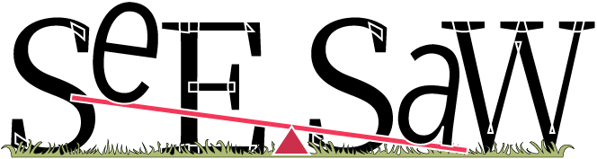

Finally... something diffrent
We are not traditional.
SeeSaw Film Production company is a small independent film and digital video producer
who mostly tell stories from perspectives often ignored and in a unique manner begining during the quarantines of 2020.
Foco Brochure
Trailers
Email Us